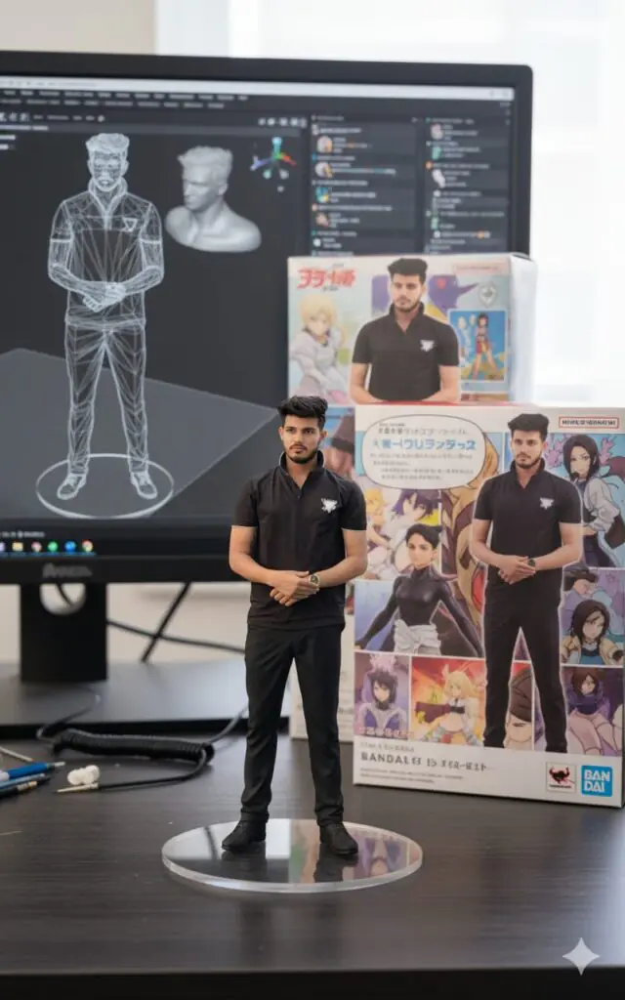

Have you seen those hyper-realistic miniature action figure images flooding social feeds lately? Everyone’s talking about how simple snapshots turn into collectible-style figurines—with acylic bases, model boxes, and even a computer screen displaying the sculpting process.
This isn’t 3D printing magic—it’s AI powered by Gemini 2.5 Flash (“Nano Banana”), and the trend is exploding. Let’s dive into why it’s going viral and how you can join the fun.
Want more awesome prompts?
Join our community and get the latest viral prompts daily.
Follow on Instagram



Why It’s Trending Right Now
Just over a week ago—on September 4, 2025—Google revealed that its Gemini app’s “Nano Banana” image-editing model helped bring 10 million new users to the app. The “figurine prompt” was highlighted as one of the most viral use cases, where users transform themselves (or their pets!) into photorealistic mini figurines displayed on a desk—with packaging included.
This trend taps into nostalgia for collectible action figures, but with a modern twist: it’s entirely digital. You get a polished, “official product” look, without needing fancy software or 3D modeling skills.
What Makes The Prompt So Powerful
At the heart of the trend is a well-crafted prompt—precise, visual, and vivid. A widely shared example reads:
“Create a photorealistic 1/7 scale character figure in a commercial product-photography style. Show the finished figure displayed on a transparent circular acrylic base […]. Behind the figure, place a BANDAI-style packaging box printed with the full-color original 2D artwork […]. On the computer monitor, display the character’s gray clay sculpt in ZBrush […], set everything on a clean computer desk[…] with soft lighting…”(flux-ai.io, PerfectCorp)
This prompt nails it by combining toy-centric scale, real-world textures, modeled sculpting context, and environmental cues—making the result feel like an official promotional shot.
How Users Are Creating Their Own Figures
Here’s how the process typically works:
- Upload a clear photo—face or full body, well-lit, minimal background.
- Paste the detailed prompt (variations exist, but the key elements remain the same: scale, acrylic base, packaging, modeling screen).
- Hit generate in Gemini 2.5 Flash (Nano Banana).(PerfectCorp, flux-ai.io)
- Tweak as needed—adjust base, pose, lighting, packaging and regenerate to refine the result.
Multiple sources note how Gemini 2.5 Flash produces consistently high-fidelity images, preserving likeness and delivering realistic textures and detail.(flux-ai.io, Tempo, Tom’s Guide)
One blog by Perfect Corp also walks through the trend step-by-step—with prompts nearly identical to ours:
“Create a 1/6 scale commercialized figurine… round transparent acrylic base, with no text […]. On the computer screen is the ZBrush modeling process. Next to the screen is a BANDAl-style toy packaging box printed with the original artwork.”(PerfectCorp)
The Magic of Presentation
What makes these AI-generated figurine renders feel so compelling? It’s all in the details:
These search terms align with both user curiosity and trending topics.
Tips for Yours to Stand Out
If you’re writing a blog or social post about this:
Prompt: “Create a lifelike 1/7 scale commercial action figure of the character in the image. The figure should be posed on a computer desk, mounted on a round transparent acrylic base (no text), styled like a professional promotional photo. On the computer screen, display the ZBrush sculpting stage of the figure. Beside the screen, place a BANDAI-style toy packaging box featuring the original 2D artwork.”
Final Thoughts
The Viral 3D Action Figure AI Prompt is a perfect storm of nostalgia, creativity, and AI power. Thanks to Gemini’s fast, high-quality output (“Nano Banana”), anyone can transform a photo into what looks like a real product shot in seconds. Whether you’re a content creator, toy enthusiast, or just someone looking for a fun digital keepsake—this trend is irresistible, accessible, and perfectly primed for 2025.
So go ahead—upload your pic, use the prompt, and watch yourself turn into the action figure you never knew you needed.